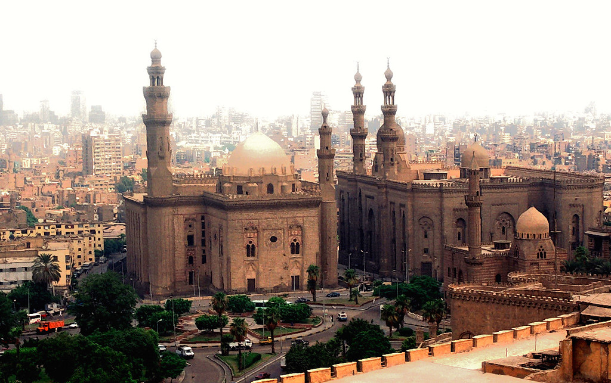
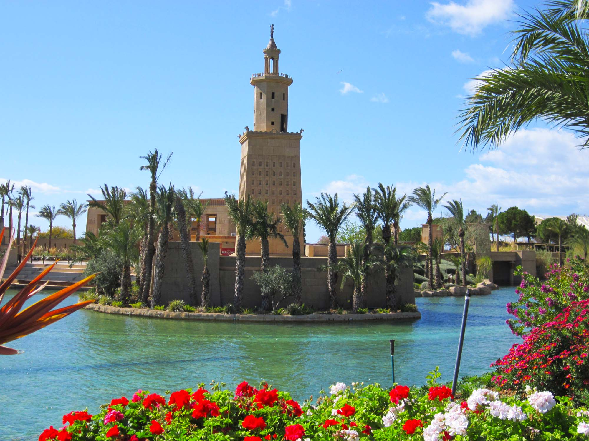
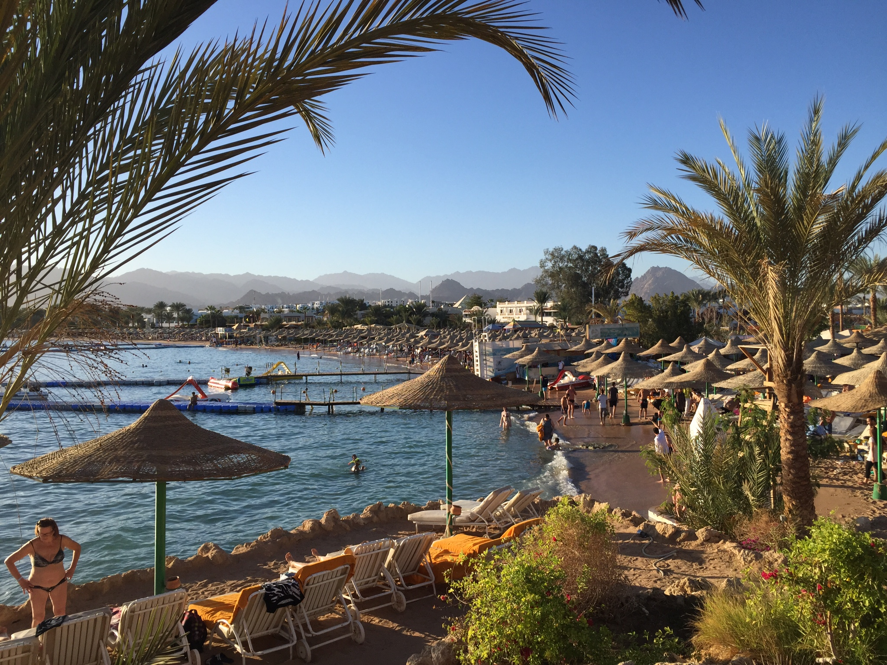

El Cairo
Fechas disponibles: 12-19 Octubre
Capital histórica con las icónicas pirámides de Giza y la Esfinge. Descubre el Museo Egipcio y sumérgete en una cultura milenaria.


Fechas disponibles: 12-19 Octubre
Capital histórica con las icónicas pirámides de Giza y la Esfinge. Descubre el Museo Egipcio y sumérgete en una cultura milenaria.

Fechas disponibles: 25 Septiembre - 2 Octubre
Ciudad mediterránea con historia clásica. Visita la Biblioteca de Alejandría, el paseo marítimo y sus fortalezas.

Fechas disponibles: 8-15 Octubre
Considerada el mayor museo al aire libre. Explora el Valle de los Reyes, templos de Karnak y Luxor.

Fechas disponibles: 20-27 Septiembre
Destino tranquilo a orillas del Nilo. Disfruta de paseos en faluca y visita el templo de Philae.

Fechas disponibles: 15-22 Octubre
Paraíso del Mar Rojo. Ideal para buceo, snorkel y descanso en resorts junto a aguas cristalinas.